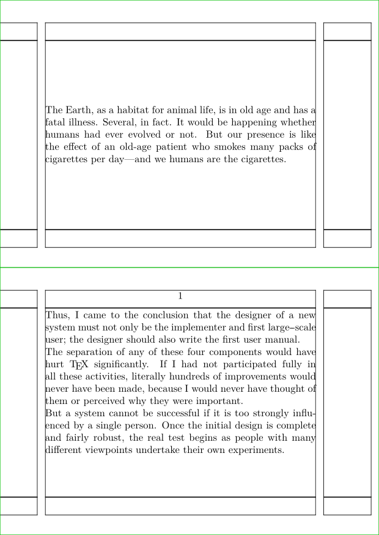

Contents
Summary
The environment \startmakeup ... \stopmakeup is used for pages with an explicit layout
Settings
Description
A makeup is a separate page, like a title page or colofon. There is one standard makeup page predefined, but you can define more if needed.
It is a page type with a special layout / header and footer sections that last only temporarily. The key point is that such a page does not (have to) rely on the current page layout style, which is especially useful for title pages.
Examples
Example 1
-
% next lines are illustrative only \setuppapersize[A7,landscape][A6] \showframe \setuppaper[mx=1,ny=2] \setuparranging[XY] \starttext \startmakeup [standard] \input ward \stopmakeup \input knuth \stoptext
- 